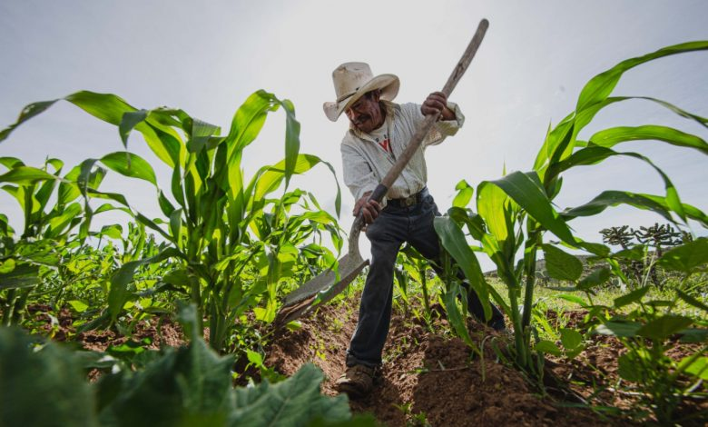

La importancia de la agricultura en mexico
En México es la agricultura el principal componente en el sector agropecuario, su aportación es
mucho mayor en relación al sector pesquero,
pecuario y acuícola, además permanece vigente durante todo el año con sus distintos
cultivos.
Esta actividad es la encargada de proveer alimentos, materias primas, y mano de obra al sector
agroindustrial
y de servicios, también, demanda gran cantidad de productos industriales de primera necesidad
para la producción agrícola, entre ellos:
fertilizantes, herbicidas, plaguicidas, maquinaria, entre otros, y en el aspecto social favorece
el arraigo a sus tierras, el sustento a
familias y la preservación de recursos naturales de cierto número de personas en localidades
productoras.

Cuales son los tipos de agricultura y como ayuda a la sociedad?
En nuestro país se practican dos tipos de agricultura: la tradicional o extensiva, en la cual el
productor depende en gran parte de las lluvias, condiciones climatológicas y mano de obra no
salariada y la segunda, la agricultura comercial o intensiva en la para producir se implementa
tecnología de punta y mano de obra asalariada.
Así pues, la agricultura beneficia al núcleo familiar al proveerle de alimentos, de empleo y
recursos económicos cuando se dedican a esta actividad, de seguridad alimentaria, así como de
cultura y tradición gastronómica.
Cual es la problematica en la sociedad?
La problemática social de inseguridad alimentaria como lo es la hambruna en el mundo es causada
por diversas situaciones externas:
LA SEQUÍA
El riego insuficiente o nulo en los cultivos ocasiona pérdidas de las cosechas. Una de las
consecuencias del cambio climático es la sequía por la escasez de lluvias, incluso hay países
donde no llueve por largos periodos de tiempo. Esto impide la irrigación de los cultivos, además
que el alto consumo de agua en las zonas urbanas e industriales que entorpecen el proceso de
siembra. Un claro ejemplo de las consecuencias de la sequía es la paupérrima situación que viven
casi 150 millones de personas en la zona africana del Sahel.
LOS CONFLICTOS ARMADOS
Una de las tantas consecuencias de los conflictos armados es la pérdida de las cosechas. Las
guerras impactan intensamente en los países en conflicto produciendo crisis alimentarias debido
a la destrucción de cultivos, y los agricultores deben abandonar las siembras siendo desplazados
a otras regiones, también se bloquean las vías de acceso a las zonas de siembra.
LAS PLAGAS
Las plagas son un gran volumen de insectos que afectan el rendimiento en las cosechas o cultivos
destruyendo gran parte o todas las plantas, y como consecuencia provoca la pérdida parcial o
total de la cosecha.
El incremento de las plagas en los cultivos ha aumentado cada año, la FAO estima un 40 % de
pérdida del rendimiento en los cultivos por afectación de las plagas siendo más intenso en los
países cálidos.
LOS CONFLICTOS POLÍTICO-SOCIALES
La globalización afecta enormemente a la producción de alimentos. Altos precios en los cereales
conlleva a que millones de personas en el mundo no puedan adquirir productos alimenticios,
ocasionado crisis alimentarias en los países menos favorecidos.
La desigualdad social, como otro de los factores importantes en la producción de alimentos,
contrasta enormemente en la producción alimenticia, ya que grandes extensiones de tierra en
pocas manos de terratenientes impiden el acceso a las mejores tierras de cultivo para los más
necesitados impidiendo realizar cultivos de subsistencia.
La demanda hacia la agricultura
Mientras pasan los desastres como las sequias, conflictos armados, plagas y conflictos politicos
sociales los agricultores son los mayores productores y los menos pagados por el trabajo por
esfuerzo de estos, por eso es que las personas son las que salen perjudicadas haciendo que para
el año 2010 el informe sobre El estado de la inseguridad alimentaria en el
mundo refiere que esta se empeora en contextos de crisis prolongadas y que en
países en desarrollo los indicadores clave que se relacionan con la IA son: la
proporción de personas subnutridas, la proporción de niños con retraso en
crecimiento, la tasa de mortalidad de niños menores de cinco años y el índice global
del hambre.
Debido al aumento de precios de los alimentos en los mercados locales e
internacionales, aunado a la crisis económica global que comenzó en 2008, se ha
afectado la capacidad de los hogares para adquirir alimentos o se ha demeritado su calidad
nutricional.